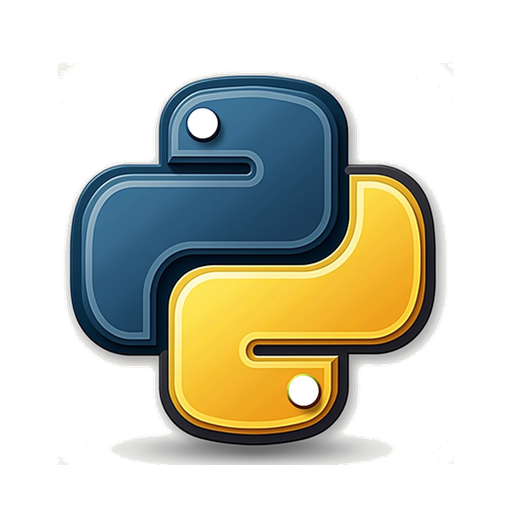

Você está offline
O Portal Python continua instalado no seu aparelho. Reconecte-se à internet para acessar os conteúdos e sua conta.

O Portal Python continua instalado no seu aparelho. Reconecte-se à internet para acessar os conteúdos e sua conta.